|
Hitchcock, la légende du suspense |
|

|
Très vite, ces brèves apparitions devinrent un jeu pour le réalisateur, puis une obligation car guettées par ses fans. Hitchcock dû donc la placer dans les premières minutes du film pour que les spectateurs ne soient pas détournés de l'intrigue. A partir de Rebecca en 1940, Hitchcock s'arrangera toujours à apparaître dans ses films. Dans Lifeboat (1944), huis clos se déroulant sur un canot de sauvetage, Hitchcock fait son apparition sur un journal lu par un des naufragés, sur une publicité de cure amaigrissante en posant pour avant/après. Comble de son sens de l'humour noir, il fait sa dernière apparition dans Complot de famille (1976), en silhouette uniquement dans le bureau des "Certificats de naissances et décès".
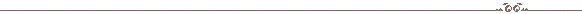
En silhouette dans le bureau des "Certificats de naissances et décès".
FRENZY (1972):
Au milieu de la foule, un chapeau melon sur la tête.
TOPAZ (1969):
Poussé dans une chaise roulante, il se lève, salue un homme, et part.
TORN CURTAIN (1966):
Assis dans le hall de l'Hôtel d'Angleterre avec un bébé joufflu. 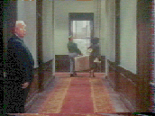 MARNIE (1964):
Passe dans le couloir de l'hôtel après le passage de Tippi Hedren.
THE BIRDS (1963): Sort de chez le marchand d'animaux avec deux fox terriers lorsque Tippi Hedren entre.
Attend devant l'agence avec un chapeau de cow-boy.
NORTH BY NORTHWEST (1959):
Rate son bus.
VERTIGO (1958):
Passe devant le portail d'entrée du chantier naval.
THE WRONG MAN (1956):
Voix off du prologue.
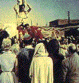 THE MAN WHO KNEW TOO MUCH (1956): Regarde les acrobates sur la place du marché au Maroc.
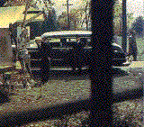 THE TROUBLE WITH HARRY (1955):
Passe derrière la limousine du vieil homme amateur de peintures.
TO CATCH A THIEF (1955):
Assis au fond du bus à coté de Cary Grant.
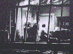 REAR WINDOW (1954):
Répare la pendule dans l'appartement du compositeur.
DIAL M FOR MURDER (1954):
Un des "anciens élèves" sur la photo souvenir accrochée au mur.
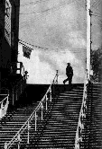 I CONFESS (1953):
Traverse le haut d'un grand escalier (39 marches?) à la fin du générique.
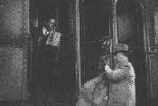 STRANGERS ON A TRAIN (1951):
Monte dans un train avec un étui de contrebasse.
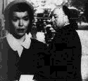 STAGE FRIGHT (1950): Se retourne pour regarder Jane Wyman.
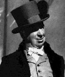 UNDER CAPRICORN (1949):
Dans la ville lors du défilé. On le retrouve parmi les hommes sur les marches de la maison du gouverneur. ROPE (1948):
On parle des enchaînés.
THE PARADINE CASE (1947): Quitte un train un violoncelle à la main. NOTORIOUS (1946):
Boit rapidement du champagne lors de la réception chez Claude Rains.
SPELLBOUND (1945):
Sort d'un ascenseur de l'Empire Hôtel, un étui de violon à la main.
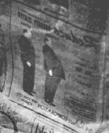 LIFEBOAT (1944): Deux fois en photo sur un journal pour la publicité d'un produit amaigrissant (avant/après).
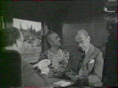 SHADOW OF A DOUBT (1943):
Dans le train pour Santa Rosa, de dos, jouant aux cartes.
SABOTEUR (1942):
Dans une rue de New York lorsque la voiture du saboteur s'arrête.
SUSPICION (1941):
Poste une lettre.
MR. AND MRS. SMITH (1941):
Croise Robert Montgomery en face de son immeuble.
FOREIGN CORRESPONDENT (1940):
Lit le journal lorsque Joel McCrea quitte l'hôtel.
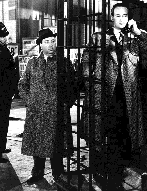 REBECCA (1940): Près de la cabine téléphonique qu'utilise George Sanders. Cette scène semble avoir été coupée au montage car elle n'apparait pas, du moins dans la version française...
THE LADY VANISHES (1938): Fume un cigarette à Victoria Station. 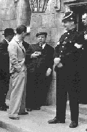 YOUNG AND INNOCENT (1938): A l'extérieur du palais de justice, un appareil photo à la main.
THE 39 STEPS (1935):
Croise Robert Donat et Lucie Mannheim lorsqu'ils entrent au théâtre.
MURDER (1930):
Passe devant la maison du meurtre.
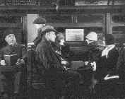 BLACKMAIL (1929): Perturbé par un enfant alors qu'il tente de lire dans le métro.
EASY VIRTUE (1927): Passe derrière un court de tennis. 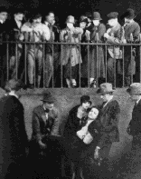 THE LODGER (1926): Assis derrière un bureau au journal, puis parmi la foule lors de l'arrestation (2ème à droite).
|